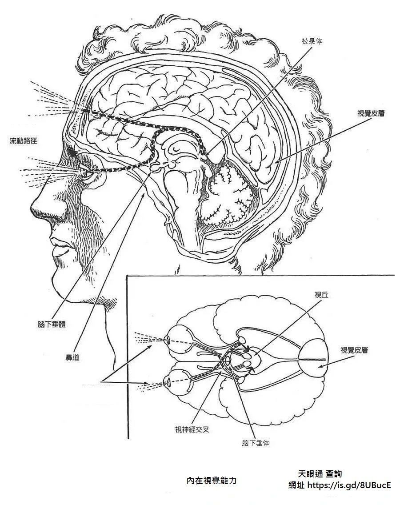

開啟天眼
Open the eye of heaven

第三眼 打開的過程 與時間 每個人所經歷的皆不相同 如果累世修為境界有達到過 此世修練上 就會更快促成 也因此造就了 有些人明明沒練功 小時候 或某個時機點一到 就具備陰陽眼.
開天眼條件
第三眼所看到的影像 往往根據自己從小生長 自己國家的文化 學習經歷 過程 宗教接觸 學習體驗….等 會有直接的關聯性.因為這是透過自己解讀出來的部分.
會依據畫面呈現的不同.自己心態的接受程度.而內心是否產生抗拒 都會有所關聯.也就是心性.換言之 如果內心非常的不接受.自然就會想要去封起來.也就是有些人 有此能力是愉快的.有些人則是反感的.
如果有能力將此能力不斷提升 則就有機會提高眼功的能力境界.更能幫助自己修行.
很多人把第三眼的能力 非常簡化的誤認為 就是閉眼跟張開眼 這麼的簡單.好像只要一張開演了 就天下無敵了 啥都能看到了 這都是錯誤的迷失.
白星奇 就在這邊透過自己實修第三眼的經驗 分享一下
把這眼的能力 分成硬體 跟軟體 等相關條件來比喻硬體方面:天目穴(夠不夠大)跟相關經脈 跟眉心輪 跟心輪 跟左右腦相關經脈穴位 這些跟第三眼相關的所有部分 是否疏通 都屬於 你的硬體部分 是否夠齊全
軟體部分:也就是 初禪 二禪 三禪 四禪 你當下入定的境界 到達多少程度.
第三條件 就是能量 是否充足.
以上三大條件 的總和 就能知道你的眼的能力 境界 到達哪種程度.白老師 分成兩種狀態 你們去判斷看看第一種 被動看到:這種狀態 就是自己只能某些時候突然看到啥 當自己刻意想使用眼 卻偏偏啥都看不到.這就代表 第三眼的能力不穩定 無法用.
第二種 主動看到:這種狀態 表示當你想用 就能用.可能自己會發現 看不準 或是無法看太多次.但自少 想用第三眼 就至少能用一下.(這部分先不談眼的境界)
而假設 你已經能算是穩定能用第三眼了.那就初步恭喜你.未來就是看自己有沒有辦法 提升眼的境界.過程就好比本來拿到古時候的單筒望遠鏡 慢慢修練變成 現代的雙筒望遠鏡 又慢慢修練 變成天文望遠鏡 又慢慢修練變成 飛到地球外的天文望遠鏡.藉由不斷的修練 讓自己提升自己眼的境界的意思.
那如果你還無法用 連被動都看不到 那就是自己判斷看看有沒有以下徵狀 去判斷自己目前程度如何.
你的第三隻眼睛打開的8個跡象和症狀
天目敏感反應
天目穴位上 是否有明顯能量感 是否感覺到有個洞(非實體的洞)。
眉心輪感到淨化能力
這部分可能有些人會感覺到眉心輪淨化能力夠強了 或是旋轉力道加強了 或是有清明的感覺 舒服的感覺…等.
如果是有壓力 不舒服 表示尚未疏通 能量不足 或堵塞.那就表示有差距….
直覺
眉心輪 跟理性靈感有關聯. 如果你的直覺力 越來越加強.偶而感覺到自己可以預知未來.或是能感知到特別事物.都算這部分在提升中.只是尚未把這些資訊 轉換成畫面而已.當你這能力越來越穩定之時.自己就會越來越有信心.不懷疑自己
千里眼能力
開始會發現光.有時亮 有時霧濛濛 有時是彩色光 非單一光.如果穩定就會有劇情 畫面.
聲音
有時會聽到聲音 發現聲音來自身體內
增加創造力自己的靈感 創造力 感覺有所提升
意料不到的答案出現.不經過腦筋思考 突然想出解決辦法.
生活中相關難題 很順利就找出辦法 克服 解決掉.
清晰度 會比較了解 自己所處的局勢
面臨生活中總總挑戰更加信心與突破.不再畏首畏尾 裹足不前.